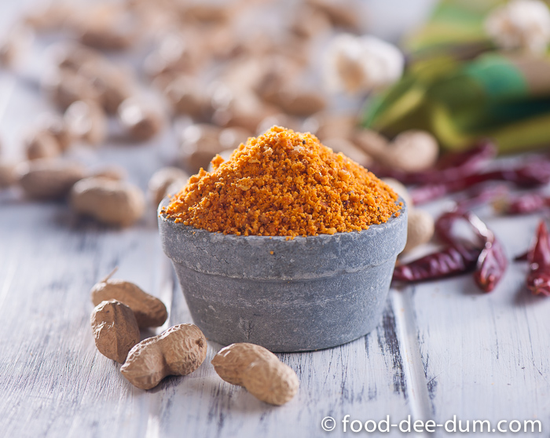

Shengdana Chutney

Description
This is a traditional Maharashtrian dry chutney made from roasted peanuts.
It tastes great with chapatis or rotis. The traditional way is to use a
mortar and pestle but you can also use spice grinder if you have one.
Ingredients
- 1 cup roasted peanuts
- 2 teaspoons chili powder
- 1 dried red chili pepper, or more to taste
- 1 teaspoon toasted cumin seeds
- salt to taste
Steps
-
Crush peanuts, chili powder, red chile pepper, cumin seeds, and salt
with a mortar and pestle until fine and powdery.
- Serve with roti.